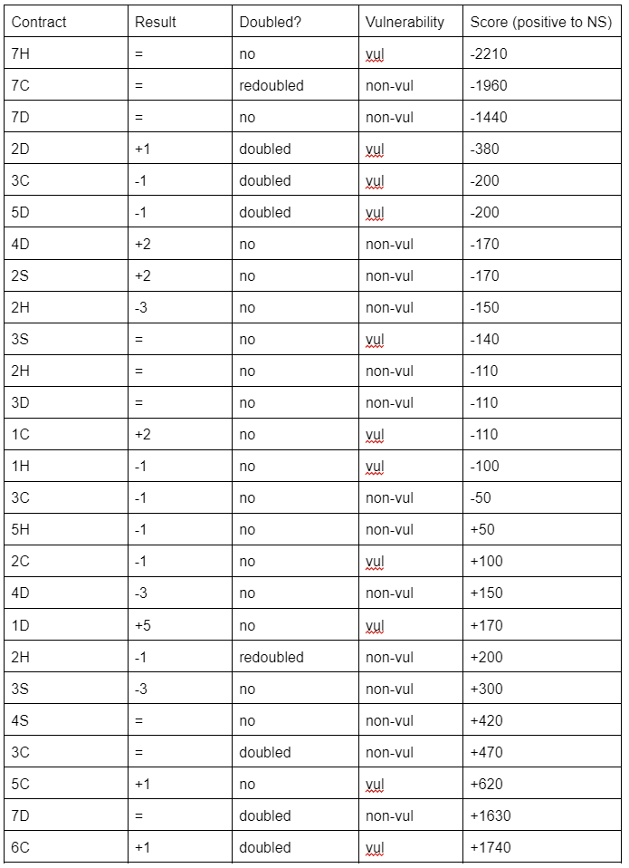

Solution: Contractual Obligation
Answer: AIRCRAFT CRASH
Written by Xue Heng
This puzzle is about contract bridge. The title suggests this and the two links at the bottom should give it away. Solvers should also notice that the initials of the descriptions form a clue phrase: SCORE DIFF IMPS. Putting this phrase into a search engine yields International Match Points scoring, which is a method of scoring used in contract bridge team matches.
Next, solvers could proceed to realize that there are a total of 13 descriptions and 26 drawings, and can easily match two drawings to each description just by examining the contents of the drawings.
Furthermore, there are several suspicious features in each drawing that might seem out of place. In fact, each drawing encodes a contract bridge score! The encoding works as follows:
Color of the drawing: red means the declarer is vulnerable and green means the declarer is not vulnerable; these colors conventionally represent vulnerabilities.
A number of clubs, diamonds, hearts or spades: what the contract is; e.g. if there are six diamonds in a drawing, then the contract is six diamonds.
Direction N/S/E/W on the contract: who the declarer is.
A number of plusses, minuses or an equal sign next to the direction: the result of the contract; e.g. if there is one plus, then the contract made with an overtrick; if there are two minuses, then the contract went two down; if there is an equal sign, the contract just made.
The number of contract papers stuck together: if there is one contract paper, the contract is undoubled; if there are two, the contract is doubled; if there are four, the contract is redoubled.
From the above features, solvers are able to derive a numerical score from each drawing. We can use the given online calculator link to help with this.(note that a positive amount of points to one partnership is exactly the same as a negative amount of points to the opposing partnership sitting in the opposite direction)
Note: images are arranged according to the scores, from most negative to most positive North-South score (equivalently, most positive to most negative East-West score).
Here are the scores associated with each of the images from top to bottom:

Solvers should also notice that the descriptions look particularly suspicious, especially “Olympian of all trades”, “Serpent of the hill” and “Fire in the hole”. In particular, each description has one word that can be changed to form a phrase that contains a court card, a number or an ordinal. The new phrases provide a natural ordering, from two (the smallest card in contract bridge) to ace (the largest card):
Sweeping wind -> Second wind
Captain’s wheel -> Third wheel
Indestructible wall -> Fourth wall
Engaged column -> Fifth column
Musical sense -> Sixth sense
Rainbow heaven -> Seventh heaven
Figure out -> Figure eight
Imperilled lives -> Nine lives
Perfect casino -> Perfect ten
Olympian of all trades -> Jack of all trades
Drama cinema -> Drama queen
Serpent of the hill -> King of the hill
Fire in the hole -> Ace in the hole
The information we have so far can be summarized as follows, and we can use the help of the other link provided to figure out how team match scoring works. A brief explanation would be that in a team match, NS at one table (one drawing) and EW at the other table (the other drawing) form a team. For example, for Sweeping Wind, EW at one table scores +140 for 3S= vulnerable, while their teammates (NS at the other table) score -110 because their opponents (EW) made 1C+2 vulnerable. So the score difference is 140-110=30, which corresponds to 1 IMP.
| Description | Points to North-South | Points to North-South | Difference in points (absolute value) | Difference in points converted to IMPs | Convert to A-Z 1-26 |
|---|---|---|---|---|---|
| Sweeping wind | -110 | -140 | 30 | 1 | A |
| Captain’s wheel | 50 | 420 | 370 | 9 | I |
| Indestructible wall | -170 | 1630 | 1800 | 18 | R |
| Engaged column | -110 | -200 | 90 | 3 | C |
| Musical sense | 470 | -1440 | 1910 | 18 | R |
| Rainbow heaven | 200 | 170 | 30 | 1 | A |
| Figure out | 150 | -100 | 250 | 6 | F |
| Imperilled lives | 100 | -2210 | 2310 | 20 | T |
| Perfect casino | -150 | -50 | 100 | 3 | C |
| Olympian of all trades | -110 | -1960 | 1850 | 18 | R |
| Drama cinema | -200 | -170 | 30 | 1 | A |
| Serpent of the hill | -380 | 1740 | 2120 | 19 | S |
| Fire in the hole | 620 | 300 | 320 | 8 | H |
The extracted letters, in order, spell the answer, AIRCRAFT CRASH.
Author's Notes
I had to write a puzzle about contract bridge. Given how big a part this game plays in my life, I just had to. There exist only a few puzzles about contract bridge given how niche it is (they can mostly be found here: https://devjoe.appspot.com/huntindex/keyword/bridgegame), and it wasn’t easy to think of a unique idea that did not involve the knowledge of bidding conventions or trick-taking skills. This was particularly important to me as our hunt is meant for way smaller teams than the MIT mystery hunt: it is expected that most teams don’t have solvers with knowledge about contract bridge, so all the required information had to be reasonably attainable.
This puzzle originally started off without providing the links to the score calculator as well as team match scoring. However, teams had difficulty calculating the scores and comparing scores across two tables (not sure when to add and when to subtract numbers), and hence the links were provided. My original intent was for discovering that the puzzle is about bridge to be the first aha, and giving the links spoilt that, but it made for a smoother solving experience in later testsolves, so I left the links there.
Sorry for my lousy artwork. I’ve been horrible at art since primary school, and I pretty much doodled everything on paint with a stylus on my laptop screen… this is the result. I wanted this puzzle to have a whimsical side, and I hope that the sketchy drawings at least somewhat helped to achieve that!
To my fellow contract bridge lovers out there, I hope to meet you at the table one day :)